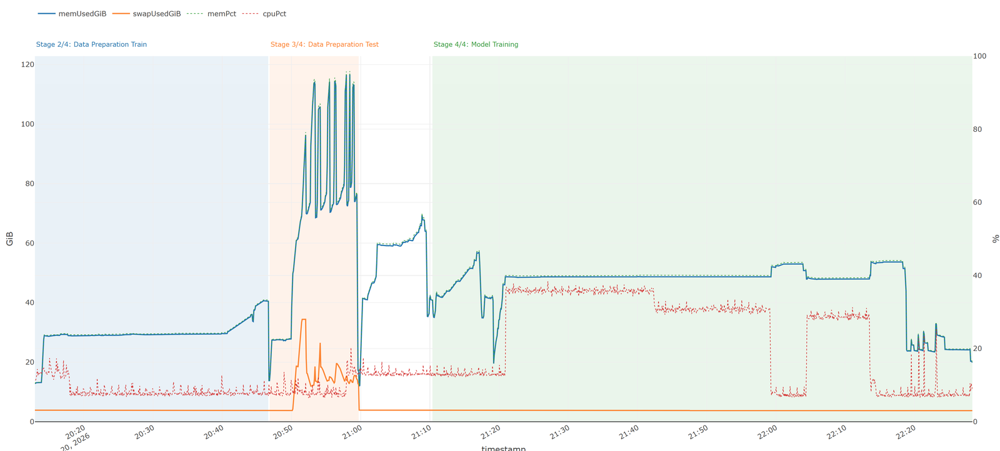
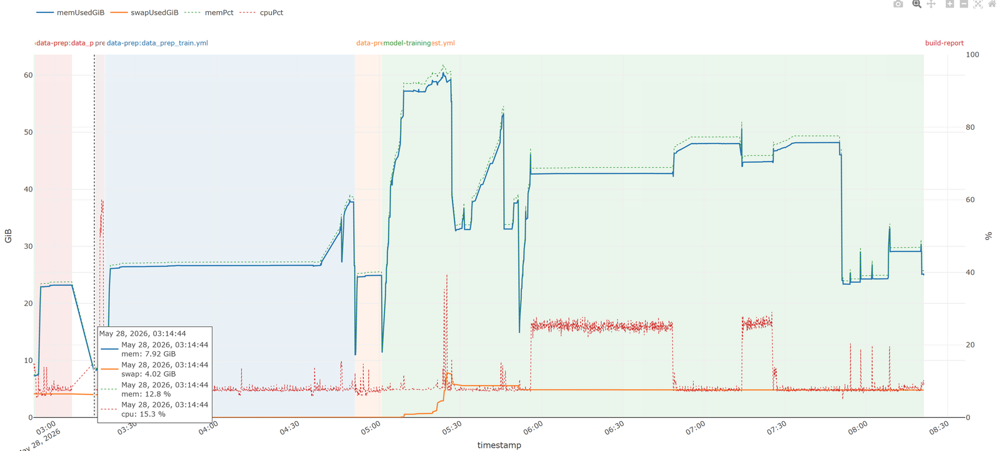
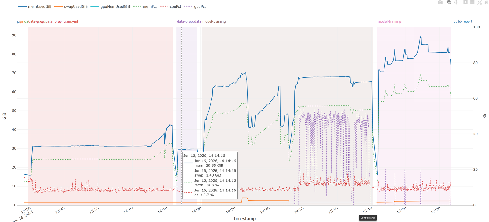
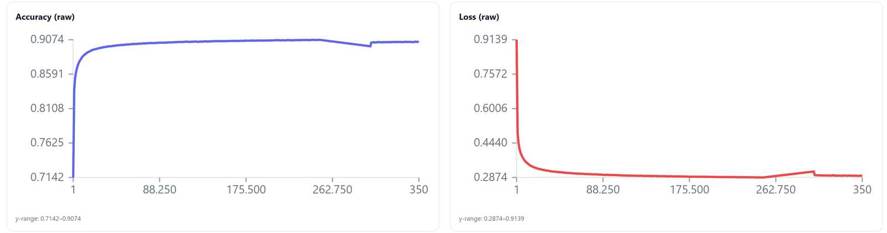

I took over an externally built, AI-assisted training pipeline for a low-power wake-word model and fixed its memory, packaging and GPU problems: 3.8× lower peak memory in data preparation and 50% faster model training, with the same model quality.
Period2026
My roleOptimization and architecture lead
EmployerInfineon
130 → 34 GBpeak memory in data preparation
2×lower overall memory use
−50%model-training stage time on GPU
3 h 30 → 2 h 14end-to-end GPU pipeline
The challenge
The project is a pipeline that trains a tiny, always-listening wake-word detector for microcontroller-class hardware. It prepares thousands of keyword recordings, mixes them with noise and room acoustics, aligns them to the spoken text, trains and quantizes a small neural network, and reports hit rates at fixed false-alarm levels.
The first version came from an external team working with AI assistance. It ran end to end, but it had structural problems that made it slow, fragile and hard to run on new hardware:
Memory: data preparation built giant in-memory lists and ran out of memory near the end of a batch.
Packaging: the forced-alignment step depended on a Docker-based setup, which is awkward to run inside the pipeline's own containers.
GPU use: the GPU run was slower than the CPU run, and the pipeline could not run on ARM-based NVIDIA hardware.
Cold starts: identical runs differed by 30 minutes depending on whether the input data happened to be in the OS cache.
What I changed
1. Streaming data preparation (the "malloc farm")
The signal-mixing step created every combination of speaker, room response, direction, noise and diffuse field for every keyword file in a batch, and held all of the results in one list. Peak memory grew with batch size × combinations. I turned the mixer into a generator, so each mixed signal is produced, saved and dropped before the next one is built. Peak memory is now that of a single mix.
BEFORE: build everything, then save
All combinationsheld in one list
→
Savememory O(batch × combos)
AFTER: stream one at a time
Generatoryields one mix
→
Save and dropmemory O(1 mix)
Simplified, illustrative diagram.
Peak memory in data preparation (GB)
Measured on the same dataset; the ML results are identical.
Inherited pipeline
130
After streaming fix
34
The system monitor shows the effect. Before: large spikes while preparing the test set that reach close to the machine's full memory. After: data preparation stays flat and the peak moves to model training, at about half of the old peak.

Before: memory spikes during test-set preparation.

After: data preparation stays flat; overall peak is about half.
2. Forced alignment without Docker
The aligner (Montreal Forced Aligner) was started through a Docker-based design. I replaced it with a self-contained, relocatable bundle that a fresh checkout installs with one idempotent script:
A packed conda environment is downloaded from a public dataset, checked against a SHA-256 checksum and unpacked in place.
Two thin wrappers (a shell script for Linux and macOS and a batch file for Windows) activate the bundle and pass arguments and exit codes through unchanged.
The pipeline resolves the aligner in a fixed order: explicit override, bundled wrapper, bundled entry point, then the system path. Every pipeline component gets the same resolved value.
Re-running the installer when everything is in place takes about two seconds.
BEFORE
Pipeline container
→
Dockernested container runtime
→
Aligner
AFTER
Pipeline container
→
Wrappersh / bat
→
Bundled alignerchecksummed env
Simplified, illustrative diagram.
3. Profiling the GPU run, then fixing what was actually slow
I measured every stage on both CPU and GPU. The model is tiny (three dense layers on a vector of roughly 340 inputs), so the GPU only helps in one short step. The rest of the GPU run paid for launch overhead, a starved input pipeline, CPU-only post-processing and repeated JIT compilation on a new GPU architecture. The fixes:
Parallel input pipeline: the data generator ran with one worker. It now uses multiple worker processes and a deep queue in all three training phases (initial fit, pruning fine-tune and quantization-aware training). Each setting can be overridden from the environment.
Dual-stage model training: the CPU-only post-processing (int8 inference and threshold tuning, about 70 minutes on the GPU pod) now runs in a separate, slim CPU step. The GPU is held only for the training that uses it.
Skipped diagnostic pass: a full pass over 1.5 million training examples, repeated three times, is now off by default.
Persistent CUDA cache: compiled GPU kernels are kept on a volume so they survive pod restarts instead of being recompiled each time.
ARM and in-cluster support: a custom TensorFlow CUDA image runs the pipeline on ARM-based NVIDIA workstation hardware, and in-cluster runs use the standard NVIDIA container image.
BEFORE: one GPU pod
Fitstarved by one data worker
Quantization-aware training
int8 inference and tuningCPU work on a GPU pod, ~70 min
AFTER: split by hardware
GPU podfit, quantization-aware training
→
Slim CPU podint8 inference and tuning
Simplified, illustrative diagram.
Model-training stage by sub-phase (minutes, projected from profiling)
Profiling-based estimate for the GPU run. Measured totals are below.
int8 inference and tuning
70
25
Quantization-aware training
30
18
Initial fit (300 epochs)
25
12
Loss pass, 1.5 M examples
10
6
Kernel compilation and policy churn
9
2
InheritedAfter fixes (projected)
An honest side finding: after the same fixes are applied to the CPU run (parallel data pipeline, leaner post-processing), the GPU advantage on a model this small drops to about 11 minutes. The GPU only pays off clearly if the model grows or the data moves to a streaming pipeline that can keep the device busy.
4. Cold-cache pre-warm
Three back-to-back GPU runs with the same code and data took 2 h 16 m, 2 h 47 m and 2 h 14 m. The slow run had simply lost the dataset from the operating-system page cache. A single read-to-null step now runs just before submission, so the pipeline's first read is served from RAM. Because the pipeline's containers share the host kernel through a bind mount, warming the host warms every container.
Submit scriptreads input once
→
OS page cachefree RAM, shared by the host kernel
→
Pipeline containersfirst read is a RAM hit
Simplified, illustrative diagram. Pre-warm is a no-op (about one second) when data is already cached, and can be skipped for cold-cache measurements.
Same code and data, three runs (minutes)
Warm cache
136
Cold cache (regression)
168
Cold, then pre-warmed
134
Results
End-to-end pipeline wall time (minutes)
CPU baseline
146
GPU, as inherited
210
GPU, measured after fixes
134
GPU, analysis projection
115
The GPU pipeline went from 3 h 30 m, an hour slower than CPU, to about 2 h 14 m, faster than the CPU baseline.
Model training dropped from about 2 h 31 m to about 1 h 15 m, with no impact on result quality.
Of the proposals tracked in the analysis, five are implemented (plus two bonus optimizations), one was deferred by design and none were missed.
The next bottleneck is training-set data preparation (about 45 minutes), which was not part of the original plan.

A full run with training and post-processing split into separate steps: data preparation, GPU training, then CPU post-processing (right).
Model quality was kept
None of the performance work changed the ML results. The final model reaches about 0.91 accuracy over 350 epochs, and the loss settles near 0.29.

Training accuracy and loss from a run of the optimized pipeline.
Weighted hit rate by false-alarm (FAR) setting
Evaluation on 56,992 test recordings, grouped by signal-to-noise ratio, room response, gender and noise type.
FAR 0.0001
82.6%
FAR 0.0002
90.1%
FAR 0.0004
90.6%
FAR 0.0006
91.3%
FAR 0.0008
92.9%
FAR 0.001
93.2%
FAR 0.005
97.6%
How I worked
Measured first: per-stage timings and system-monitor traces on both CPU and GPU, then proposals ranked by expected saving.
Changed one lever at a time and re-ran with the same data, so each result is attributable and the model results stay comparable.
Wrote the findings up as analysis and design notes, including what was not done and why, so the next engineer can pick up the open items.